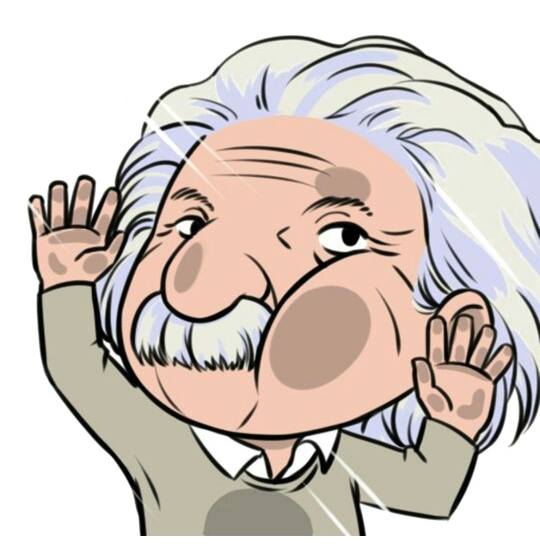

SCIENTIST DOSSIER NO. 01
[ SCIENTIST NAME ]
アルベルト・アインシュタイン
Albert Einstein
THEORETICAL PHYSICS 1879—1955
“Imagination is more important than knowledge.”
01 / 04
能力参数主观示意 / 01—05
A
理论颠覆力重写经典物理的边界。
05 / 05
SUBSTITUTE
ARCHIVE / 01
ARCHIVE / 01

THEORY / RELATIVITY20物理光学学习单元
66物理光学逐题练习
中 / EN双语阅读
4种学习视图
TWO TEXTBOOKS · TWO LEARNING PATHS
选一本书，从已完成的小节开始。
LEARNING PATH
不是先背公式，
而是看懂它的来处。
一节内容里可以在实验、图解回顾、完整讲义和正式练习之间切换。想追推导时展开细节，想检验理解时立刻做题。
- 01
先预测
带着一个具体问题进入场景，不要求提前记住结论。
- 02
再操作
改变图示中的条件，对照现象与模型边界。
- 03
说清原因
讲义从概念、条件走向公式；详细验算可按需展开。
- 04
换情境检验
逐题反馈不止给对错，还解释推理和常见误解。
CURRENT SCOPE
两本书，各自成课。
《傅里叶光学》目前覆盖 1.1–1.2；《物理光学（第5版）》目前覆盖 1.1–1.6.5。两者都在持续完善，不是整本教材。
讲解、练习和交互图示为重新组织的学习材料；网站不提供教材 PDF。图示是教学模型，不是实测数据。